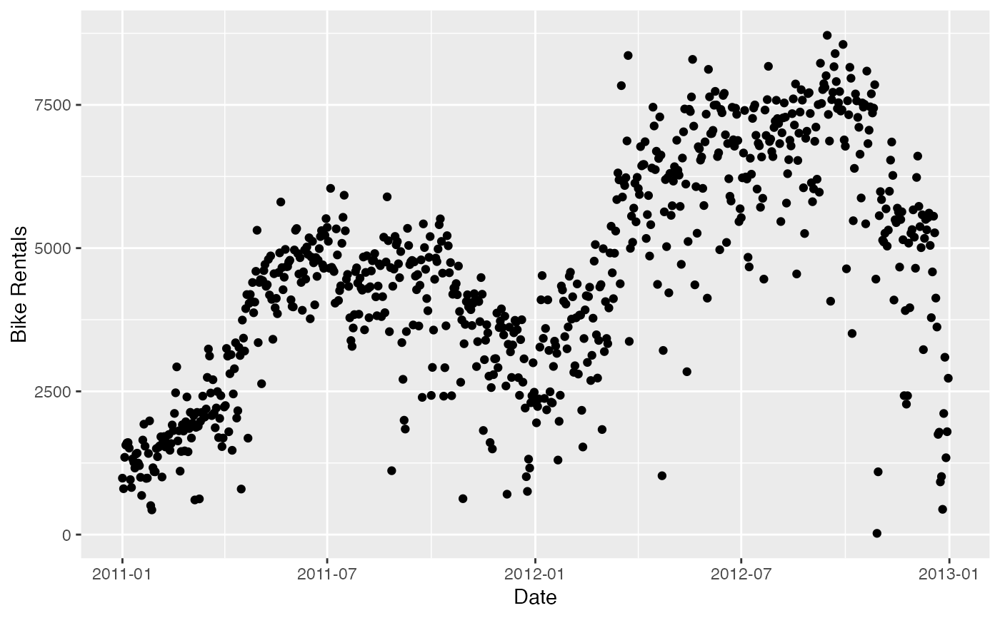

Bike sharing systems are new generation of traditional bike rentals where whole process from membership, rental and return back has become automatic. Through these systems, user is able to easily rent a bike from a particular position and return back at another position. As of May 2018, there are about over 1600 bike-sharing programs around the world, providing more than 18 million bicycles for public use. Today, there exists great interest in these systems due to their important role in traffic, environmental and health issues.
dcbikeshare
A tibble with 731 rows and 16 variables:
record index
date
season (1:winter, 2:spring, 3:summer, 4:fall)
year (0: 2011, 1:2012)
month (1 to 12)
whether day is holiday or not (extracted from http://dchr.dc.gov/page/holiday-schedule)
day of the week
if day is neither weekend nor holiday is 1, otherwise is 0.
1: Clear, Few clouds, Partly cloudy, Partly cloudy, 2: Mist + Cloudy, Mist + Broken clouds, Mist + Few clouds, Mist, 3: Light Snow, Light Rain + Thunderstorm + Scattered clouds, Light Rain + Scattered clouds, 4: Heavy Rain + Ice Pallets + Thunderstorm + Mist, Snow + Fog
Normalized temperature in Celsius. The values are divided by 41 (max)
Normalized feeling temperature in Celsius. The values are divided by 50 (max)
Normalized humidity. The values are divided by 100 (max)
Normalized wind speed. The values are divided by 67 (max)
Count of casual users
Count of registered users
Count of total rental bikes including both casual and registered
http://archive.ics.uci.edu/ml/datasets/Bike+Sharing+Dataset
Apart from interesting real world applications of bike sharing systems, the of data being generated by these systems make them attractive for the research. Opposed to other transport services such as bus or subway, the duration of travel, departure and arrival position is explicitly recorded in these systems. This feature turns bike sharing system into a virtual sensor network that can be used for sensing mobility in the city. Hence, it is expected that most of important events in the city could be detected via monitoring these data.
The dataset comes from UCI Machine Learning Repository. Sources of the data itself are Capital Bikeshare, freemeteo.co.uk for weather data, and dv.gov for the holiday schedule.
The data have been modified to better serve the goals of introductory data science education.
library(ggplot2) ggplot(dcbikeshare, aes(x = dteday, y = cnt)) + geom_point() + labs( x = "Date", y = "Bike Rentals" ) 